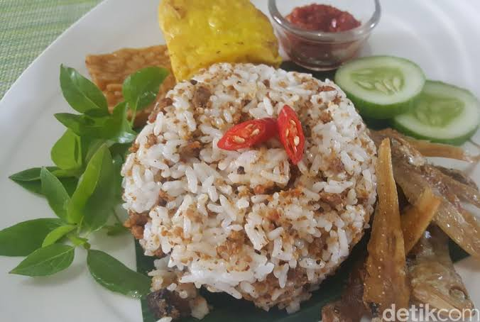

| Nasi tutug oncom merupakan makanan khas Sunda dengan menyajikan nasi yang diaduk dengan oncom goreng atau oncom bakar. Nasi tutug oncom ini merupakan masakan khas Tasikmalaya, Jawa Barat. Nasi tutug oncom dibuat dengan mengaduk dan menumbuk nasi dan oncom. Penyajiannya bersama lauk pendamping, seperti tahu,tempe goreng, ayam goreng, lalapan sayur, dan sambal terasi. Nasi tutug oncom paling enak apabila disajikan dalam keadaan hangat. |  |
| (Sumber: www.orami.co.id) |